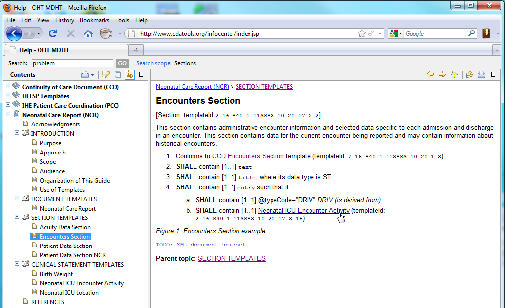

Publish an implementation guide document from a UML model containing CDA template definitions.
This is still work-in-progress, however excellent progress has been made using the DITA XML standard for technical documentation as a vehicle for publishing implementation guides. The current proof-of-concept tooling can publish guides in both PDF and the Eclipse Help format. The on-line help format is a promising new approach for publishing and sharing CDA template specifications. The following screen shot illustrates an example.
